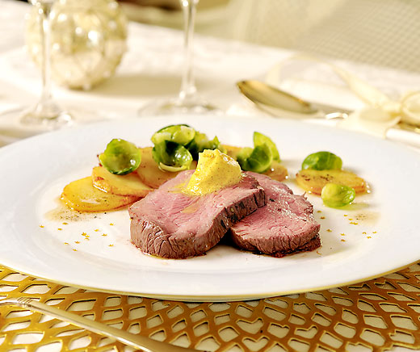

Chateaubriand mit CurryOrangenbutter

Marinade
- 3 EL Olivenöl
- 2 EL Rosmarin, fein geschnitten
- 1 unbehandelte Orange, abgeriebene Schale und Saft
- 3 EL Saft
- 800 g Rindsfilet (Filetkopf), vom Metzger binden lassen
- 1 TL Salz
- wenig Pfeffer
- 1 EL Bratbutter
Und so wirds gemacht:
- Öl, Rosmarin, Orangenschale und -saft verrühren, Fleisch damit bestreichen, zugedeckt im Kühlschrank ca. 12 Std. marinieren.
- Fleisch ca. 1 Std. vor dem Braten aus dem Kühlschrank nehmen. Ofen auf 80 Grad vorheizen, Platte und Teller vorwärmen. Marinade vom Fleisch abstreifen, würzen. Bratbutter in einer Bratpfanne heiss werden lassen. Filet bei mittlerer Hitze rundum ca. 5 Min. anbraten, herausnehmen, auf die vorgewärmte Platte legen. Fleischthermometer an der dicksten Stelle einstecken.
- Niedergaren: ca. 1,5 Std. in der Mitte des auf 80 Grad vorgeheizten Ofens. Die Kerntemperatur soll ca. 55 Grad (à point) betragen. Das Fleisch kann anschliessend bei 60 Grad bis zu 1 Std. warm gehalten werden.
CurryOrangenbutter
- 1 unbehandelte Orange, abgeriebene Schale und Saft
- 2 TL Madras-Curry
- 150 g gesalzene Butter, weich
Und so wirds gemacht:
- Orangenschale und -saft ca. 5 Min. auf ca. 1 Esslöffel Saft einköcheln, auskühlen.
- Butter, Curry und eingekochten Orangensaft mit den Schwingbesen des Handrührgeräts ca. 2 Min. rühren, zugedeckt kühl stellen.
Bratkartoffeln
- 800 g Gschwellti (fest kochende Sorte), vom Vortag
- Bratbutter zum Braten
- 200 g Rosenkohl, Blätter abgelöst
- 1 TL Salz
- 0.25 TL Muskat
- wenig Pfeffer
Und so wirds gemacht:
- Geschwellti schälen, in ca. 5 mm dicke Scheiben schneiden.
- Bratbutter in einer beschichteten Bratpfanne heiss werden lassen. Kartoffeln bei mittlerer Hitze unter gelegentlichem Wenden ca. 10 Min. braten. Rosenkohlblätter beigeben, ca. 3 Min. fertig braten, würzen.
Lässt sich vorbereiten:
CurryOrangenbutter ca. 2 Tage im Voraus zubereiten, zugedeckt im Kühlschrank aufbewahren.